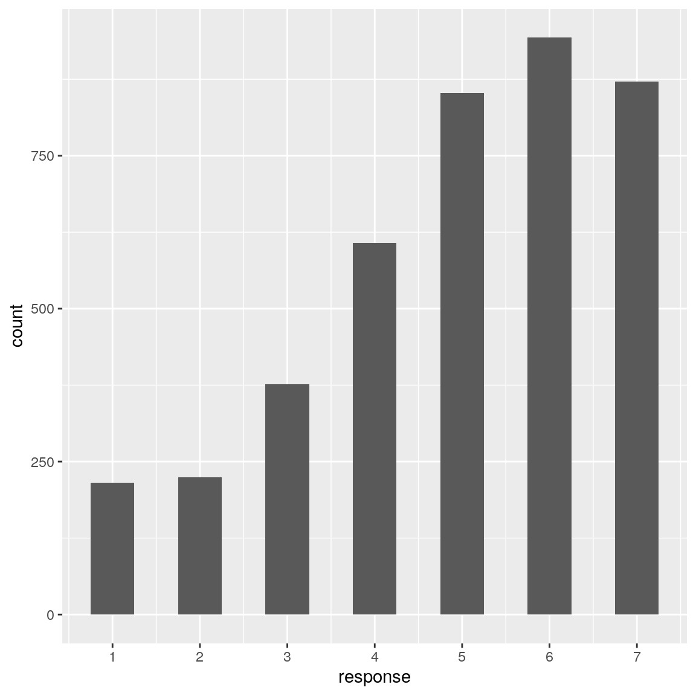
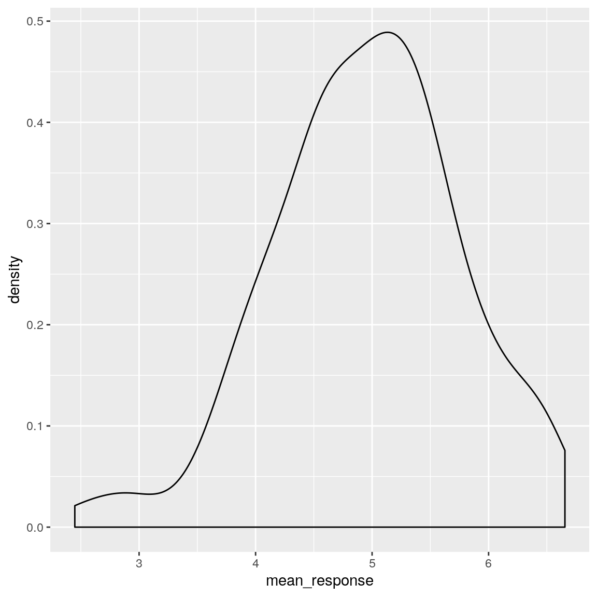
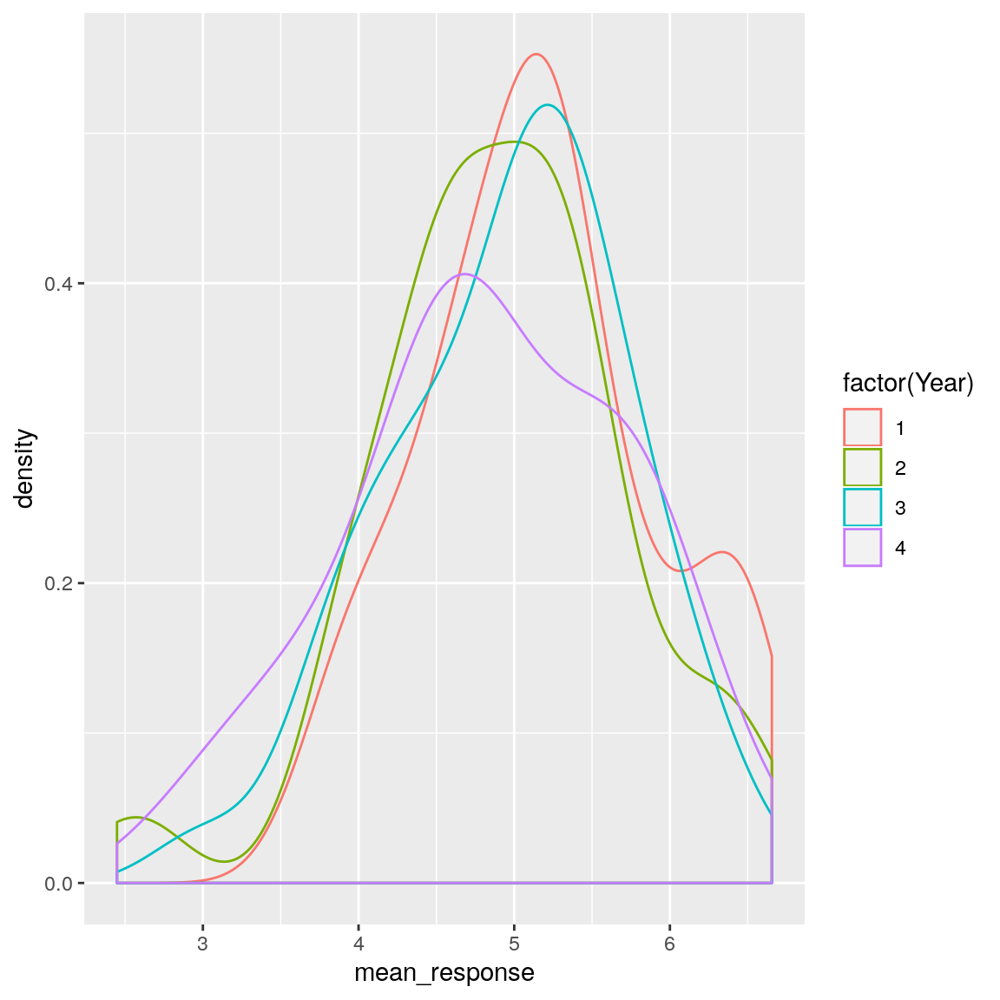
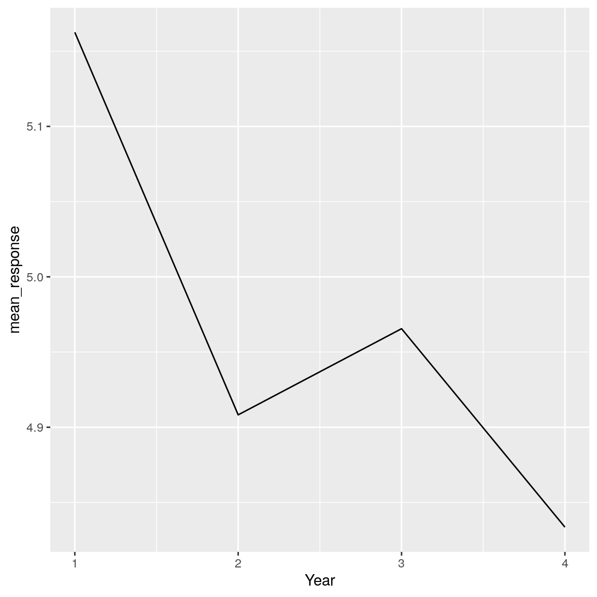

Chapter 2 Summarizing data using R (with Lucy King)
This chapter will introduce you to how to summarize data using R, as well as providing an introduction to a popular set of R tools known as the “Tidyverse.”
Before doing anything else we need to load the libraries that we will use in this notebook.
library(tidyverse)
library(cowplot)
library(knitr)
set.seed(123456)
opts_chunk$set(tidy.opts=list(width.cutoff=80))
options(tibble.width = 60)We will use the NHANES dataset for several of our examples, so let’s load the library that contains the data.
# load the NHANES data library
# first unload it if it's already loaded, to make sure
# we have a clean version
rm('NHANES')
library(NHANES)
dim(NHANES)## [1] 10000 762.1 Introduction to the Tidyverse
In this chapter we will introduce a way of working with data in R that is often referred to as the “Tidyverse.” This comprises a set of packages that provide various tools for working with data, as well as a few special ways of using those functions
2.1.1 Making a data frame using tibble()
The tidyverse provides its own version of a data frame, which is known as a tibble. A tibble is a data frame but with some smart tweaks that make it easier to work with, expecially when using functions from the tidyverse. See here for more information on the function tibble(): https://r4ds.had.co.nz/tibbles.html
# first create the individual variables
n <- c("russ", "lucy", "jaclyn", "tyler")
x <- c(1, 2, 3, 4)
y <- c(4, 5, 6, 7)
z <- c(7, 8, 9, 10)
# create the data frame
my_data_frame <-
tibble(
n, #list each of your columns in the order you want them
x,
y,
z
)
my_data_frame## # A tibble: 4 x 4
## n x y z
## <chr> <dbl> <dbl> <dbl>
## 1 russ 1 4 7
## 2 lucy 2 5 8
## 3 jaclyn 3 6 9
## 4 tyler 4 7 10Take a quick look at the properties of the data frame using glimpse():
## Observations: 4
## Variables: 4
## $ n <chr> "russ", "lucy", "jaclyn", "tyler"
## $ x <dbl> 1, 2, 3, 4
## $ y <dbl> 4, 5, 6, 7
## $ z <dbl> 7, 8, 9, 102.1.2 Selecting an element
There are various ways to access the contents within a data frame.
2.1.2.1 Selecting a row or column by name
## [1] 1 2 3 4The first index refers to the row, the second to the column.
## # A tibble: 1 x 1
## x
## <dbl>
## 1 1## # A tibble: 1 x 1
## y
## <dbl>
## 1 52.1.2.2 Selecting a row or column by index
## # A tibble: 1 x 4
## n x y z
## <chr> <dbl> <dbl> <dbl>
## 1 russ 1 4 7## # A tibble: 4 x 1
## n
## <chr>
## 1 russ
## 2 lucy
## 3 jaclyn
## 4 tyler2.1.2.3 Select a set of rows
## # A tibble: 2 x 4
## n x y z
## <chr> <dbl> <dbl> <dbl>
## 1 russ 1 4 7
## 2 lucy 2 5 8slice() is a function that selects out rows based on their row number.
You will also notice something we haven’t discussed before: %>%. This is called a “pipe”, which is commonly used within the tidyverse; you can read more here. A pipe takes the output from one command and feeds it as input to the next command. In this case, simply writing the name of the data frame (my_data_frame) causes it to be input to the slice() command following the pipe. The benefit of pipes will become especially apparent when we want to start stringing together multiple data processing operations into a single command.
In the previous example, no new variable was created - the output was simply printed to the screen, just like it would be if you typed the name of the variable. If you wanted to save it to a new variable, you would use the <- assignment operator, like this:
## # A tibble: 2 x 4
## n x y z
## <chr> <dbl> <dbl> <dbl>
## 1 russ 1 4 7
## 2 lucy 2 5 82.1.2.4 Select a set of rows based on specific value(s)
## # A tibble: 1 x 4
## n x y z
## <chr> <dbl> <dbl> <dbl>
## 1 russ 1 4 7filter() is a function that retains only those rows that meet your stated criteria. We can also filter for multiple criteria at once — in this example, the | symbol indicates “or”:
## # A tibble: 2 x 4
## n x y z
## <chr> <dbl> <dbl> <dbl>
## 1 russ 1 4 7
## 2 lucy 2 5 82.1.2.5 Select a set of columns
## # A tibble: 4 x 2
## x y
## <dbl> <dbl>
## 1 1 4
## 2 2 5
## 3 3 6
## 4 4 7select() is a function that selects out only those columns you specify using their names
You can also specify a vector of columns to select.
## # A tibble: 4 x 2
## x z
## <dbl> <dbl>
## 1 1 7
## 2 2 8
## 3 3 9
## 4 4 102.1.3 Adding a row or column
add a named row
tiffany_data_frame <-
tibble(
n = "tiffany",
x = 13,
y = 14,
z = 15
)
my_data_frame %>%
bind_rows(tiffany_data_frame)## # A tibble: 5 x 4
## n x y z
## <chr> <dbl> <dbl> <dbl>
## 1 russ 1 4 7
## 2 lucy 2 5 8
## 3 jaclyn 3 6 9
## 4 tyler 4 7 10
## 5 tiffany 13 14 15bind_rows() is a function that combines the rows from another dataframe to the current dataframe
2.2 Creating or modifying variables using mutate()
Often we will want to either create a new variable based on an existing variable, or modify the value of an existing variable. Within the tidyverse, we do this using a function called mutate(). Let’s start with a toy example by creating a data frame containing a single variable.
## Observations: 4
## Variables: 1
## $ x <dbl> 1, 2, 3, 4Let’s say that we wanted to create a new variable called y that would contain the value of x multiplied by 10. We could do this using mutate() and then assign the result back to the same data frame:
toy_df <- toy_df %>%
# create a new variable called y that contains x*10
mutate(y = x * 10)
glimpse(toy_df)## Observations: 4
## Variables: 2
## $ x <dbl> 1, 2, 3, 4
## $ y <dbl> 10, 20, 30, 40We could also overwrite a variable with a new value:
toy_df2 <- toy_df %>%
# create a new variable called y that contains x*10
mutate(y = y + 1)
glimpse(toy_df2)## Observations: 4
## Variables: 2
## $ x <dbl> 1, 2, 3, 4
## $ y <dbl> 11, 21, 31, 41We will use mutate() often so it’s an important function to understand.
Here we can use it with our example data frame to create a new variable that is the sum of several other variables.
| n | x | y | z | total |
|---|---|---|---|---|
| russ | 1 | 4 | 7 | 12 |
| lucy | 2 | 5 | 8 | 15 |
| jaclyn | 3 | 6 | 9 | 18 |
| tyler | 4 | 7 | 10 | 21 |
mutate() is a function that creates a new variable in a data frame using the existing variables. In this case, it creates a variable called total that is the sum of the existing variables x, y, and z.
2.2.1 Remove a column using the select() function
Adding a minus sign to the name of a variable within the select() command will remove that variable, leaving all of the others.
| n | x | y | z |
|---|---|---|---|
| russ | 1 | 4 | 7 |
| lucy | 2 | 5 | 8 |
| jaclyn | 3 | 6 | 9 |
| tyler | 4 | 7 | 10 |
2.3 Tidyverse in action
To see the tidyverse in action, let’s clean up the NHANES dataset. Each individual in the NHANES dataset has a unique identifier stored in the variable ID. First let’s look at the number of rows in the dataset:
## [1] 10000Now let’s see how many unique IDs there are. The unique() function returns a vector containing all of the unique values for a particular variable, and the length() function returns the length of the resulting vector.
## [1] 6779This shows us that while there are 10,000 observations in the data frame, there are only 6779 unique IDs. This means that if we were to use the entire dataset, we would be reusing data from some individuals, which could give us incorrect results. For this reason, we wold like to discard any observations that are duplicated.
Let’s create a new variable called NHANES_unique that will contain only the distinct observations, with no individuals appearing more than once. The dplyr library provides a function called distinct() that will do this for us. You may notice that we didn’t explicitly load the dplyr library above; however, if you look at the messages that appeared when we loaded the tidyverse library, you will see that it loaded dplyr for us. To create the new data frame with unique observations, we will pipe the NHANES data frame into the distinct() function and then save the output to our new variable.
If we number of rows in the new data frame, it should be the same as the number of unique IDs (6779):
## [1] 6779In the next example you will see the power of pipes come to life, when we start tying together multiple functions into a single operation (or “pipeline”).
2.4 Looking at individual variables using pull() and head()
The NHANES data frame contains a large number of variables, but usually we are only interested in a particular variable. We can extract a particular variable from a data frame using the pull() function. Let’s say that we want to extract the variable PhysActive. We could do this by piping the data frame into the pull command, which will result in a list of many thousands of values. Instead of printing out this entire list, we will pipe the result into the head() function, which just shows us the first few values contained in a variable. In this case we are not assigning the value back to a variable, so it will simply be printed to the screen.
NHANES %>%
# extract the PhysActive variable
pull(PhysActive) %>%
# extract the first 10 values
head(10) %>%
kable()| x |
|---|
| No |
| No |
| No |
| NA |
| No |
| NA |
| NA |
| Yes |
| Yes |
| Yes |
There are two important things to notice here. The first is that there are three different values apparent in the answers: “Yes”, “No”, and
The second thing to notice is that R prints out a list of “Levels” of the variable. This is because this variable is defined as a particular kind of variable in R known as a factor. You can think of a factor variable as a categorial variable with a specific set of levels. The missing data are not treated as a level, so it can be useful to make the missing values explicit, which can be done using a function called fct_explicit_na() in the forcats package. Let’s add a line to do that:
NHANES %>%
mutate(PhysActive = fct_explicit_na(PhysActive)) %>%
# extract the PhysActive variable
pull(PhysActive) %>%
# extract the first 10 values
head(10) %>%
kable()| x |
|---|
| No |
| No |
| No |
| (Missing) |
| No |
| (Missing) |
| (Missing) |
| Yes |
| Yes |
| Yes |
This new line overwrote the old value of PhysActive with a version that has been processed by the fct_explicit_na() function to convert
Now we are ready to start summarizing data!
2.5 Computing a frequency distribution (Section ??)
We would like to compute a frequency distribution showing how many people report being either active or inactive. The following statement is fairly complex so we will step through it one bit at a time.
PhysActive_table <- NHANES_unique %>%
# convert the implicit missing values to explicit
mutate(PhysActive = fct_explicit_na(PhysActive)) %>%
# select the variable of interest
dplyr::select(PhysActive) %>%
# group by values of the variable
group_by(PhysActive) %>%
# count the values
summarize(AbsoluteFrequency = n())
# kable() prints out the table in a prettier way.
kable(PhysActive_table)| PhysActive | AbsoluteFrequency |
|---|---|
| No | 2473 |
| Yes | 2972 |
| (Missing) | 1334 |
This data frame still contains all of the original variables. Since we are only interested in the PhysActive variable, let’s extract that one and get rid of the rest. We can do this using the select() command from the dplyr package. Because there is also another select command available in R, we need to explicitly refer to the one from the dplyr package, which we do by including the package name followed by two colons: dplyr::select().
NHANES_unique %>%
# convert the implicit missing values to explicit
mutate(PhysActive = fct_explicit_na(PhysActive)) %>%
# select the variable of interest
dplyr::select(PhysActive) %>%
head(10) %>%
kable()| PhysActive |
|---|
| No |
| (Missing) |
| No |
| (Missing) |
| (Missing) |
| Yes |
| Yes |
| Yes |
| Yes |
| (Missing) |
The next function, group_by() tells R that we are going to want to analyze the data separate according to the different levels of the PhysActive variable:
NHANES_unique %>%
# convert the implicit missing values to explicit
mutate(PhysActive = fct_explicit_na(PhysActive)) %>%
# select the variable of interest
dplyr::select(PhysActive) %>%
group_by(PhysActive) %>%
head(10) %>%
kable()| PhysActive |
|---|
| No |
| (Missing) |
| No |
| (Missing) |
| (Missing) |
| Yes |
| Yes |
| Yes |
| Yes |
| (Missing) |
The final command tells R to create a new data frame by summarizing the data that we are passing in (which in this case is the PhysActive variable, grouped by its different levels). We tell the summarize() function to create a new variable (called AbsoluteFrequency) will contain a count of the number of observations for each group, which is generated by the n() function.
NHANES_unique %>%
# convert the implicit missing values to explicit
mutate(PhysActive = fct_explicit_na(PhysActive)) %>%
# select the variable of interest
dplyr::select(PhysActive) %>%
group_by(PhysActive) %>%
summarize(AbsoluteFrequency = n()) %>%
kable()| PhysActive | AbsoluteFrequency |
|---|---|
| No | 2473 |
| Yes | 2972 |
| (Missing) | 1334 |
Now let’s say we want to add another column with percentage of observations in each group. We compute the percentage by dividing the absolute frequency for each group by the total number. We can use the table that we already generated, and add a new variable, again using mutate():
PhysActive_table <- PhysActive_table %>%
mutate(
Percentage = AbsoluteFrequency /
sum(AbsoluteFrequency) * 100
)
kable(PhysActive_table, digits=2)| PhysActive | AbsoluteFrequency | Percentage |
|---|---|---|
| No | 2473 | 36.48 |
| Yes | 2972 | 43.84 |
| (Missing) | 1334 | 19.68 |
2.6 Computing a cumulative distribution (Section ??)
Let’s compute a cumulative distribution for the SleepHrsNight variable in NHANES. This looks very similar to what we saw in the previous section.
# create summary table for relative frequency of different
# values of SleepHrsNight
SleepHrsNight_cumulative <-
NHANES_unique %>%
# drop NA values for SleepHrsNight variable
drop_na(SleepHrsNight) %>%
# remove other variables
dplyr::select(SleepHrsNight) %>%
# group by values
group_by(SleepHrsNight) %>%
# create summary table
summarize(AbsoluteFrequency = n()) %>%
# create relative and cumulative frequencies
mutate(
RelativeFrequency = AbsoluteFrequency /
sum(AbsoluteFrequency),
CumulativeDensity = cumsum(RelativeFrequency)
)
kable(SleepHrsNight_cumulative)| SleepHrsNight | AbsoluteFrequency | RelativeFrequency | CumulativeDensity |
|---|---|---|---|
| 2 | 9 | 0.0017875 | 0.0017875 |
| 3 | 49 | 0.0097319 | 0.0115194 |
| 4 | 200 | 0.0397219 | 0.0512413 |
| 5 | 406 | 0.0806356 | 0.1318769 |
| 6 | 1172 | 0.2327706 | 0.3646475 |
| 7 | 1394 | 0.2768620 | 0.6415094 |
| 8 | 1405 | 0.2790467 | 0.9205561 |
| 9 | 271 | 0.0538232 | 0.9743793 |
| 10 | 97 | 0.0192651 | 0.9936445 |
| 11 | 15 | 0.0029791 | 0.9966236 |
| 12 | 17 | 0.0033764 | 1.0000000 |
2.7 Data cleaning and tidying with R
Now that you know a bit about the tidyverse, let’s look at the various tools that it provides for working with data. We will use as an example an analysis of whether attitudes about statistics are different between the different student year groups in the class.
2.7.1 Statistics attitude data from course survey
These data were collected using the Attitudes Towards Statistics (ATS) scale (from https://www.stat.auckland.ac.nz/~iase/cblumberg/wise2.pdf).
The 29-item ATS has two subscales. The Attitudes Toward Field subscale consists of the following 20 items, with reverse-keyed items indicated by an “(R)”: 1, 3, 5, 6(R), 9, 10(R), 11, 13, 14(R), 16(R), 17, 19, 20(R), 21, 22, 23, 24, 26, 28(R), 29
The Attitudes Toward Course subscale consists of the following 9 items: 2(R), 4(R), 7(R), 8, 12(R), 15(R), 18(R), 25(R), 27(R)
For our purposes, we will just combine all 29 items together, rather than separating them into these subscales.
Note: I have removed the data from the graduate students and 5+ year students, since those would be too easily identifiable given how few there are.
Let’s first create a variable containing the file path to the data.
Next, let’s load the data from the file using the tidyverse function read_tsv(). There are several functions available for reading in different file formats as part of the the readr tidyverse package.
Right now the variable names are unwieldy, since they include the entire name of the item; this is how Google Forms stores the data. Let’s change the variable names to be somewhat more readable. We will change the names to “atsrename() and paste0() functions. rename() is pretty self-explanatory: a new name is assigned to an old name or a column position. The paste0() function takes a string along with a set of numbers, and creates a vector that combines the string with the number.
nQuestions <- 29 # other than the first two columns,
# the rest of the columns are for the 29 questions in the statistics
# attitude survey; we'll use this below to rename these columns
# based on their question number
# use rename to change the first two column names
# rename can refer to columns either by their number or their name
attitudeData <-
attitudeData %>%
rename( # rename using columm numbers
# The first column is the year
Year = 1,
# The second column indicates
# whether the person took stats before
StatsBefore = 2
) %>%
rename_at(
# rename all the columns except Year and StatsBefore
vars(-Year, -StatsBefore),
#rename by pasting the word "stat" and the number
list(name = ~paste0('ats', 1:nQuestions))
)
# print out the column names
names(attitudeData)## [1] "Year" "StatsBefore" "ats1" "ats2" "ats3"
## [6] "ats4" "ats5" "ats6" "ats7" "ats8"
## [11] "ats9" "ats10" "ats11" "ats12" "ats13"
## [16] "ats14" "ats15" "ats16" "ats17" "ats18"
## [21] "ats19" "ats20" "ats21" "ats22" "ats23"
## [26] "ats24" "ats25" "ats26" "ats27" "ats28"
## [31] "ats29"## Observations: 148
## Variables: 31
## $ Year <dbl> 3, 4, 2, 1, 2, 3, 4, 2, 2, 2, 4, 2, 3…
## $ StatsBefore <chr> "Yes", "No", "No", "Yes", "No", "No",…
## $ ats1 <dbl> 6, 4, 6, 3, 7, 4, 6, 5, 7, 5, 5, 4, 2…
## $ ats2 <dbl> 1, 5, 5, 2, 7, 5, 5, 4, 2, 2, 3, 3, 7…
## $ ats3 <dbl> 7, 6, 5, 7, 2, 4, 7, 7, 7, 5, 6, 5, 7…
## $ ats4 <dbl> 2, 5, 5, 2, 7, 3, 3, 4, 5, 3, 3, 2, 3…
## $ ats5 <dbl> 7, 5, 6, 7, 5, 4, 6, 6, 7, 5, 3, 5, 4…
## $ ats6 <dbl> 1, 4, 5, 2, 2, 4, 2, 3, 1, 2, 2, 3, 1…
## $ ats7 <dbl> 1, 4, 3, 2, 4, 4, 2, 2, 3, 2, 4, 2, 4…
## $ ats8 <dbl> 2, 1, 4, 3, 1, 4, 4, 4, 7, 3, 2, 4, 1…
## $ ats9 <dbl> 5, 4, 5, 5, 7, 4, 5, 5, 7, 6, 3, 5, 5…
## $ ats10 <dbl> 2, 3, 2, 2, 1, 4, 2, 2, 1, 3, 3, 1, 1…
## $ ats11 <dbl> 6, 4, 6, 2, 7, 4, 6, 5, 7, 3, 3, 4, 2…
## $ ats12 <dbl> 2, 4, 1, 2, 5, 7, 2, 1, 2, 4, 4, 2, 4…
## $ ats13 <dbl> 6, 4, 5, 5, 7, 3, 6, 6, 7, 5, 2, 5, 1…
## $ ats14 <dbl> 2, 4, 3, 3, 3, 4, 2, 1, 1, 3, 3, 2, 1…
## $ ats15 <dbl> 2, 4, 3, 3, 5, 6, 3, 4, 2, 3, 2, 4, 3…
## $ ats16 <dbl> 1, 3, 2, 5, 1, 5, 2, 1, 2, 3, 2, 2, 1…
## $ ats17 <dbl> 7, 7, 5, 7, 7, 4, 6, 6, 7, 6, 6, 7, 4…
## $ ats18 <dbl> 2, 5, 4, 5, 7, 4, 2, 4, 2, 5, 2, 4, 6…
## $ ats19 <dbl> 3, 3, 4, 3, 2, 3, 6, 5, 7, 3, 3, 5, 2…
## $ ats20 <dbl> 1, 4, 1, 2, 1, 4, 2, 2, 1, 2, 3, 2, 3…
## $ ats21 <dbl> 6, 3, 5, 5, 7, 5, 6, 5, 7, 3, 4, 6, 6…
## $ ats22 <dbl> 7, 4, 5, 6, 7, 5, 6, 5, 7, 5, 5, 5, 5…
## $ ats23 <dbl> 6, 4, 6, 6, 7, 5, 6, 7, 7, 5, 3, 5, 3…
## $ ats24 <dbl> 7, 4, 4, 6, 7, 5, 6, 5, 7, 5, 5, 5, 3…
## $ ats25 <dbl> 3, 5, 3, 3, 5, 4, 3, 4, 2, 3, 3, 2, 5…
## $ ats26 <dbl> 7, 4, 5, 6, 2, 4, 6, 5, 7, 3, 4, 4, 2…
## $ ats27 <dbl> 2, 4, 2, 2, 4, 4, 2, 1, 2, 3, 3, 2, 1…
## $ ats28 <dbl> 2, 4, 3, 5, 2, 3, 3, 1, 1, 4, 3, 2, 2…
## $ ats29 <dbl> 4, 4, 3, 6, 2, 1, 5, 3, 3, 3, 2, 3, 2…The next thing we need to do is to create an ID for each individual. To do this, we will use the rownames_to_column() function from the tidyverse. This creates a new variable (which we name “ID”) that contains the row names from the data frame; thsee are simply the numbers 1 to N.
# let's add a participant ID so that we will be able to
# identify them later
attitudeData <-
attitudeData %>%
rownames_to_column(var = 'ID')
head(attitudeData)## # A tibble: 6 x 32
## ID Year StatsBefore ats1 ats2 ats3 ats4 ats5
## <chr> <dbl> <chr> <dbl> <dbl> <dbl> <dbl> <dbl>
## 1 1 3 Yes 6 1 7 2 7
## 2 2 4 No 4 5 6 5 5
## 3 3 2 No 6 5 5 5 6
## 4 4 1 Yes 3 2 7 2 7
## 5 5 2 No 7 7 2 7 5
## 6 6 3 No 4 5 4 3 4
## # … with 24 more variables: ats6 <dbl>, ats7 <dbl>,
## # ats8 <dbl>, ats9 <dbl>, ats10 <dbl>, ats11 <dbl>,
## # ats12 <dbl>, ats13 <dbl>, ats14 <dbl>, ats15 <dbl>,
## # ats16 <dbl>, ats17 <dbl>, ats18 <dbl>, ats19 <dbl>,
## # ats20 <dbl>, ats21 <dbl>, ats22 <dbl>, ats23 <dbl>,
## # ats24 <dbl>, ats25 <dbl>, ats26 <dbl>, ats27 <dbl>,
## # ats28 <dbl>, ats29 <dbl>If you look closely at the data, you can see that some of the participants have some missing responses. We can count them up for each individual and create a new variable to store this to a new variable called numNA using mutate().
We can also create a table showing how many participants have a particular number of NA values. Here we use two additional commands that you haven’t seen yet. The group_by() function tells other functions to do their analyses while breaking the data into groups based on one of the variables. Here we are going to want to summarize the number of people with each possible number of NAs, so we will group responses by the numNA variable that we are creating in the first command here.
The summarize() function creates a summary of the data, with the new variables based on the data being fed in. In this case, we just want to count up the number of subjects in each group, which we can do using the special n() function from dpylr.
# compute the number of NAs for each participant
attitudeData <-
attitudeData %>%
mutate(
# we use the . symbol to tell the is.na function
# to look at the entire data frame
numNA = rowSums(is.na(.))
)
# present a table with counts of the number of missing responses
attitudeData %>%
count(numNA)## # A tibble: 3 x 2
## numNA n
## <dbl> <int>
## 1 0 141
## 2 1 6
## 3 2 1We can see from the table that there are only a few participants with missing data; six people are missing one answer, and one is missing two answers. Let’s find those individuals, using the filter() command from dplyr. filter() returns the subset of rows from a data frame that match a particular test - in this case, whether numNA is > 0.
## # A tibble: 7 x 33
## ID Year StatsBefore ats1 ats2 ats3 ats4 ats5
## <chr> <dbl> <chr> <dbl> <dbl> <dbl> <dbl> <dbl>
## 1 42 2 No NA 2 7 5 6
## 2 55 1 No 5 3 7 4 5
## 3 90 1 No 7 2 7 5 7
## 4 113 2 No 5 7 7 5 6
## 5 117 2 Yes 6 6 7 4 6
## 6 137 3 No 7 5 6 5 6
## 7 139 1 No 7 5 7 5 6
## # … with 25 more variables: ats6 <dbl>, ats7 <dbl>,
## # ats8 <dbl>, ats9 <dbl>, ats10 <dbl>, ats11 <dbl>,
## # ats12 <dbl>, ats13 <dbl>, ats14 <dbl>, ats15 <dbl>,
## # ats16 <dbl>, ats17 <dbl>, ats18 <dbl>, ats19 <dbl>,
## # ats20 <dbl>, ats21 <dbl>, ats22 <dbl>, ats23 <dbl>,
## # ats24 <dbl>, ats25 <dbl>, ats26 <dbl>, ats27 <dbl>,
## # ats28 <dbl>, ats29 <dbl>, numNA <dbl>There are fancy techniques for trying to guess the value of missing data (known as “imputation”) but since the number of participants with missing values is small, let’s just drop those participants from the list. We can do this using the drop_na() function from the tidyr package, another tidyverse package that provides tools for cleaning data. We will also remove the numNA variable, since we won’t need it anymore after removing the subjects with missing answeres. We do this using the select() function from the dplyr tidyverse package, which selects or removes columns from a data frame. By putting a minus sign in front of numNA, we are telling it to remove that column.
select() and filter() are similar - select() works on columns (i.e. variables) and filter() works on rows (i.e. observations).
# this is equivalent to drop_na(attitudeData)
attitudeDataNoNA <-
attitudeData %>%
drop_na() %>%
select(-numNA)Try the following on your own: Using the attitudeData data frame, drop the NA values, create a new variable called mystery that contains a value of 1 for anyone who answered 7 to question ats4 (“Statistics seems very mysterious to me”). Create a summary that includes the number of people reporting 7 on this question, and the proportion of people who reported 7.
2.7.1.1 Tidy data
These data are in a format that meets the principles of “tidy data”, which state the following:
- Each variable must have its own column.
- Each observation must have its own row.
- Each value must have its own cell.
In our case, each column represents a variable: ID identifies which student responded, Year contains their year at Stanford, StatsBefore contains whether or not they have taken statistics before, and ats1 through ats29 contain their responses to each item on the ATS scale. Each observation (row) is a response from one individual student. Each value has its own cell (e.g., the values for Year and StatsBefoe are stored in separate cells in separate columns).
For an example of data that are NOT tidy, take a look at these data Belief in Hell - click on the “Table” tab to see the data.
- What are the variables
- Why aren’t these data tidy?
2.7.1.2 Recoding data
We now have tidy data; however, some of the ATS items require recoding. Specifically, some of the items need to be “reverse coded”; these items include: ats2, ats4, ats6, ats7, ats10, ats12, ats14, ats15, ats16, ats18, ats20, ats25, ats27 and ats28. The raw responses for each item are on the 1-7 scale; therefore, for the reverse coded items, we need to reverse them by subtracting the raw score from 8 (such that 7 becomes 1 and 1 becomes 7). To recode these items, we will use the tidyverse mutate() function. It’s a good idea when recoding to preserve the raw original variables and create new recoded variables with different names.
There are two ways we can use mutate() function to recode these variables. The first way is easier to understand as a new code, but less efficient and more prone to error. Specifically, we repeat the same code for every variable we want to reverse code as follows:
attitudeDataNoNA %>%
mutate(
ats2_re = 8 - ats2,
ats4_re = 8 - ats4,
ats6_re = 8 - ats6,
ats7_re = 8 - ats7,
ats10_re = 8 - ats10,
ats12_re = 8 - ats12,
ats14_re = 8 - ats14,
ats15_re = 8 - ats15,
ats16_re = 8 - ats16,
ats18_re = 8 - ats18,
ats20_re = 8 - ats20,
ats25_re = 8 - ats25,
ats27_re = 8 - ats27,
ats28_re = 8 - ats28
) ## # A tibble: 141 x 46
## ID Year StatsBefore ats1 ats2 ats3 ats4 ats5
## <chr> <dbl> <chr> <dbl> <dbl> <dbl> <dbl> <dbl>
## 1 1 3 Yes 6 1 7 2 7
## 2 2 4 No 4 5 6 5 5
## 3 3 2 No 6 5 5 5 6
## 4 4 1 Yes 3 2 7 2 7
## 5 5 2 No 7 7 2 7 5
## 6 6 3 No 4 5 4 3 4
## 7 7 4 Yes 6 5 7 3 6
## 8 8 2 Yes 5 4 7 4 6
## 9 9 2 Yes 7 2 7 5 7
## 10 10 2 Yes 5 2 5 3 5
## # … with 131 more rows, and 38 more variables: ats6 <dbl>,
## # ats7 <dbl>, ats8 <dbl>, ats9 <dbl>, ats10 <dbl>,
## # ats11 <dbl>, ats12 <dbl>, ats13 <dbl>, ats14 <dbl>,
## # ats15 <dbl>, ats16 <dbl>, ats17 <dbl>, ats18 <dbl>,
## # ats19 <dbl>, ats20 <dbl>, ats21 <dbl>, ats22 <dbl>,
## # ats23 <dbl>, ats24 <dbl>, ats25 <dbl>, ats26 <dbl>,
## # ats27 <dbl>, ats28 <dbl>, ats29 <dbl>, ats2_re <dbl>,
## # ats4_re <dbl>, ats6_re <dbl>, ats7_re <dbl>,
## # ats10_re <dbl>, ats12_re <dbl>, ats14_re <dbl>,
## # ats15_re <dbl>, ats16_re <dbl>, ats18_re <dbl>,
## # ats20_re <dbl>, ats25_re <dbl>, ats27_re <dbl>,
## # ats28_re <dbl>The second way is more efficient and takes advatange of the use of “scoped verbs” (https://dplyr.tidyverse.org/reference/scoped.html), which allow you to apply the same code to several variables at once. Because you don’t have to keep repeating the same code, you’re less likely to make an error:
#create a vector of the names of the variables to recode
ats_recode <-
c(
"ats2",
"ats4",
"ats6",
"ats7",
"ats10",
"ats12",
"ats14",
"ats15",
"ats16",
"ats18",
"ats20",
"ats25",
"ats27",
"ats28"
)
attitudeDataNoNA <-
attitudeDataNoNA %>%
mutate_at(
vars(ats_recode), # the variables you want to recode
funs(re = 8 - .) # the function to apply to each variable
)Whenever we do an operation like this, it’s good to check that it actually worked correctly. It’s easy to make mistakes in coding, which is why it’s important to check your work as well as you can.
We can quickly select a couple of the raw and recoded columns from our data and make sure things appear to have gone according to plan:
## # A tibble: 141 x 4
## ats2 ats2_re ats4 ats4_re
## <dbl> <dbl> <dbl> <dbl>
## 1 1 7 2 6
## 2 5 3 5 3
## 3 5 3 5 3
## 4 2 6 2 6
## 5 7 1 7 1
## 6 5 3 3 5
## 7 5 3 3 5
## 8 4 4 4 4
## 9 2 6 5 3
## 10 2 6 3 5
## # … with 131 more rowsLet’s also make sure that there are no responses outside of the 1-7 scale that we expect, and make sure that no one specified a year outside of the 1-4 range.
## # A tibble: 1 x 86
## ats1_min ats2_min ats3_min ats4_min ats5_min ats6_min
## <dbl> <dbl> <dbl> <dbl> <dbl> <dbl>
## 1 1 1 2 1 2 1
## # … with 80 more variables: ats7_min <dbl>, ats8_min <dbl>,
## # ats9_min <dbl>, ats10_min <dbl>, ats11_min <dbl>,
## # ats12_min <dbl>, ats13_min <dbl>, ats14_min <dbl>,
## # ats15_min <dbl>, ats16_min <dbl>, ats17_min <dbl>,
## # ats18_min <dbl>, ats19_min <dbl>, ats20_min <dbl>,
## # ats21_min <dbl>, ats22_min <dbl>, ats23_min <dbl>,
## # ats24_min <dbl>, ats25_min <dbl>, ats26_min <dbl>,
## # ats27_min <dbl>, ats28_min <dbl>, ats29_min <dbl>,
## # ats2_re_min <dbl>, ats4_re_min <dbl>,
## # ats6_re_min <dbl>, ats7_re_min <dbl>,
## # ats10_re_min <dbl>, ats12_re_min <dbl>,
## # ats14_re_min <dbl>, ats15_re_min <dbl>,
## # ats16_re_min <dbl>, ats18_re_min <dbl>,
## # ats20_re_min <dbl>, ats25_re_min <dbl>,
## # ats27_re_min <dbl>, ats28_re_min <dbl>, ats1_max <dbl>,
## # ats2_max <dbl>, ats3_max <dbl>, ats4_max <dbl>,
## # ats5_max <dbl>, ats6_max <dbl>, ats7_max <dbl>,
## # ats8_max <dbl>, ats9_max <dbl>, ats10_max <dbl>,
## # ats11_max <dbl>, ats12_max <dbl>, ats13_max <dbl>,
## # ats14_max <dbl>, ats15_max <dbl>, ats16_max <dbl>,
## # ats17_max <dbl>, ats18_max <dbl>, ats19_max <dbl>,
## # ats20_max <dbl>, ats21_max <dbl>, ats22_max <dbl>,
## # ats23_max <dbl>, ats24_max <dbl>, ats25_max <dbl>,
## # ats26_max <dbl>, ats27_max <dbl>, ats28_max <dbl>,
## # ats29_max <dbl>, ats2_re_max <dbl>, ats4_re_max <dbl>,
## # ats6_re_max <dbl>, ats7_re_max <dbl>,
## # ats10_re_max <dbl>, ats12_re_max <dbl>,
## # ats14_re_max <dbl>, ats15_re_max <dbl>,
## # ats16_re_max <dbl>, ats18_re_max <dbl>,
## # ats20_re_max <dbl>, ats25_re_max <dbl>,
## # ats27_re_max <dbl>, ats28_re_max <dbl>## # A tibble: 1 x 2
## min max
## <dbl> <dbl>
## 1 1 42.7.1.3 Different data formats
Sometimes we need to reformat our data in order to analyze it or visualize it in a specific way. Two tidyverse functions, gather() and spread(), help us to do this.
For example, say we want to examine the distribution of the raw responses to each of the ATS items (i.e., a histogram). In this case, we would need our x-axis to be a single column of the responses across all the ATS items. However, currently the responses for each item are stored in 29 different columns.
This means that we need to create a new version of this dataset. It will have four columns: - ID - Year - Question (for each of the ATS items) - ResponseRaw (for the raw response to each of the ATS items)
Thus, we want change the format of the dataset from being “wide” to being “long”.
We change the format to “wide” using the gather() function.
gather() takes a number of variables and reformates them into two variables: one that contains the variable values, and another called the “key” that tells us which variable the value came from. In this case, we want it to reformat the data so that each response to an ATS question is in a separate row and the key column tells us which ATS question it corresponds to. It is much better to see this in practice than to explain in words!
attitudeData_long <-
attitudeDataNoNA %>%
#remove the raw variables that you recoded
select(-ats_recode) %>%
gather(
# key refers to the new variable containing the question number
key = question,
# value refers to the new response variable
value = response,
#the only variables we DON'T want to gather
-ID, -Year, -StatsBefore
)
attitudeData_long %>%
slice(1:20)## # A tibble: 20 x 5
## ID Year StatsBefore question response
## <chr> <dbl> <chr> <chr> <dbl>
## 1 1 3 Yes ats1 6
## 2 2 4 No ats1 4
## 3 3 2 No ats1 6
## 4 4 1 Yes ats1 3
## 5 5 2 No ats1 7
## 6 6 3 No ats1 4
## 7 7 4 Yes ats1 6
## 8 8 2 Yes ats1 5
## 9 9 2 Yes ats1 7
## 10 10 2 Yes ats1 5
## 11 11 4 No ats1 5
## 12 12 2 No ats1 4
## 13 13 3 Yes ats1 2
## 14 14 1 Yes ats1 6
## 15 15 2 No ats1 7
## 16 16 4 No ats1 7
## 17 17 2 No ats1 7
## 18 18 2 No ats1 6
## 19 19 1 No ats1 6
## 20 20 1 No ats1 3## Observations: 4,089
## Variables: 5
## $ ID <chr> "1", "2", "3", "4", "5", "6", "7", "8…
## $ Year <dbl> 3, 4, 2, 1, 2, 3, 4, 2, 2, 2, 4, 2, 3…
## $ StatsBefore <chr> "Yes", "No", "No", "Yes", "No", "No",…
## $ question <chr> "ats1", "ats1", "ats1", "ats1", "ats1…
## $ response <dbl> 6, 4, 6, 3, 7, 4, 6, 5, 7, 5, 5, 4, 2…Say we now wanted to undo the gather() and return our dataset to wide format. For this, we would use the function spread().
attitudeData_wide <-
attitudeData_long %>%
spread(
#key refers to the variable indicating which question
# each response belongs to
key = question,
value = response
)
attitudeData_wide %>%
slice(1:20)## # A tibble: 20 x 32
## ID Year StatsBefore ats1 ats10_re ats11 ats12_re
## <chr> <dbl> <chr> <dbl> <dbl> <dbl> <dbl>
## 1 1 3 Yes 6 6 6 6
## 2 10 2 Yes 5 5 3 4
## 3 100 4 Yes 5 6 4 2
## 4 101 2 No 4 7 2 4
## 5 102 3 Yes 5 6 5 6
## 6 103 2 No 6 7 5 7
## 7 104 2 Yes 6 5 5 3
## 8 105 3 No 6 6 5 6
## 9 106 1 No 4 4 4 4
## 10 107 2 No 1 2 1 1
## 11 108 2 No 7 7 7 7
## 12 109 2 No 4 4 4 6
## 13 11 4 No 5 5 3 4
## 14 110 3 No 5 7 4 4
## 15 111 2 No 6 6 6 3
## 16 112 3 No 6 7 5 7
## 17 114 2 No 5 4 4 3
## 18 115 3 No 5 7 5 1
## 19 116 3 No 5 6 5 5
## 20 118 2 No 6 6 6 1
## # … with 25 more variables: ats13 <dbl>, ats14_re <dbl>,
## # ats15_re <dbl>, ats16_re <dbl>, ats17 <dbl>,
## # ats18_re <dbl>, ats19 <dbl>, ats2_re <dbl>,
## # ats20_re <dbl>, ats21 <dbl>, ats22 <dbl>, ats23 <dbl>,
## # ats24 <dbl>, ats25_re <dbl>, ats26 <dbl>,
## # ats27_re <dbl>, ats28_re <dbl>, ats29 <dbl>,
## # ats3 <dbl>, ats4_re <dbl>, ats5 <dbl>, ats6_re <dbl>,
## # ats7_re <dbl>, ats8 <dbl>, ats9 <dbl>Now that we have created a “long” version of our data, they are in the right format to create the plot. We will use the tidyverse function ggplot() to create our histogram with geom_histogram.
attitudeData_long %>%
ggplot(aes(x = response)) +
geom_histogram(binwidth = 0.5) +
scale_x_continuous(breaks = seq.int(1, 7, 1))
It looks like responses were fairly positively overall.
We can also aggregate each participant’s responses to each question during each year of their study at Stanford to examine the distribution of mean ATS responses across people by year.
We will use the group_by() and summarize() functions to aggregate the responses.
attitudeData_agg <-
attitudeData_long %>%
group_by(ID, Year) %>%
summarize(
mean_response = mean(response)
)
attitudeData_agg## # A tibble: 141 x 3
## # Groups: ID [141]
## ID Year mean_response
## <chr> <dbl> <dbl>
## 1 1 3 6
## 2 10 2 4.66
## 3 100 4 5.03
## 4 101 2 5.10
## 5 102 3 4.66
## 6 103 2 5.55
## 7 104 2 4.31
## 8 105 3 5.10
## 9 106 1 4.21
## 10 107 2 2.45
## # … with 131 more rowsFirst let’s use the geom_density argument in ggplot() to look at mean responses across people, ignoring year of response. The density argrument is like a histogram but smooths things over a bit.

Now we can also look at the distribution for each year.

Or look at trends in responses across years.
attitudeData_agg %>%
group_by(Year) %>%
summarise(
mean_response = mean(mean_response)
) %>%
ggplot(aes(Year, mean_response)) +
geom_line()
This looks like a precipitous drop - but how might that be misleading?